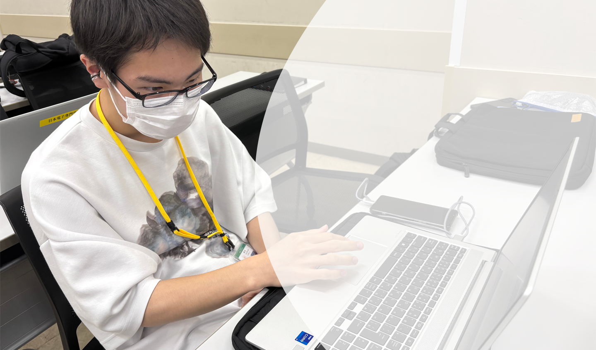
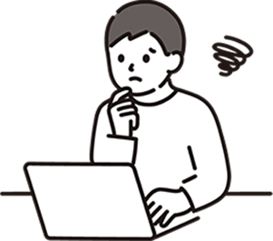
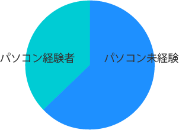
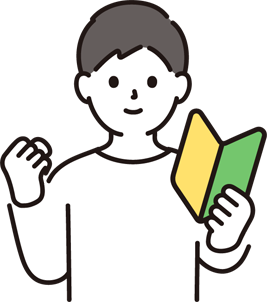
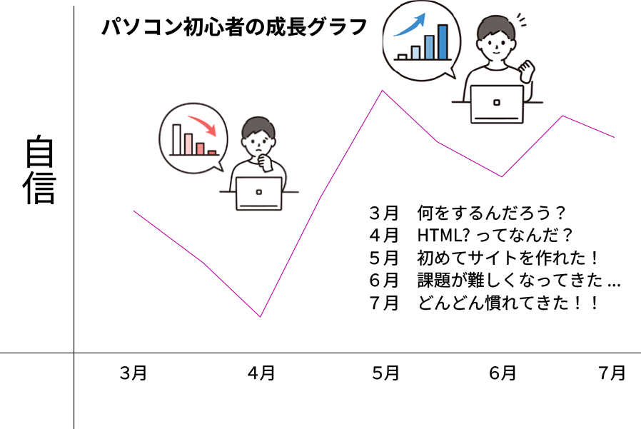

日本電子専門学校で、
ゼロからでも、未来はつくれる。
まずパソコンの何が不安なのか考えよう
周りの人はパソコンを使いこなしているのに
自分だけ使えなったらどうしよう...
興味があるだけで授業についていけないかも...
専門用語が多くて覚えるのが大変そう...

一緒に学んでいきませんか？
入学時パソコンを使いこなせていた人の割合
Webデザイン科20人に調査

パソコン未経験者は多い！
できないことがあっても諦めずに
挑戦していこう !

失敗は成功のもと
日本電子専門学校Webデザイン科は失敗を恐れず成功を追い求める学科です!いくら失敗しても1回の成功を追い求め続けます。
失敗体験
UI/UX
- 色が合っていない
- ボタンが小さい
HTML・ CSS
- 文字の色が変わらない
- 少し位置がずれている
- 画像が表示されない
JavaScript
- コードを打ったのに思い
- 通りにいかない
初心者は入学してからどれだけ上達するの？

初めの方は何もわからず、専門用語があって戸惑うことが
多かったです。でもその分今では前の自分より成長したと
実感しています。